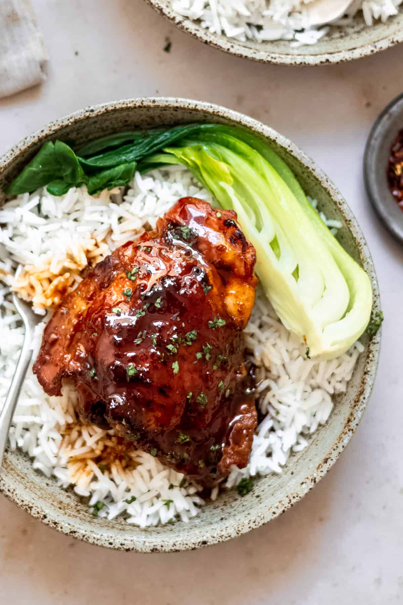
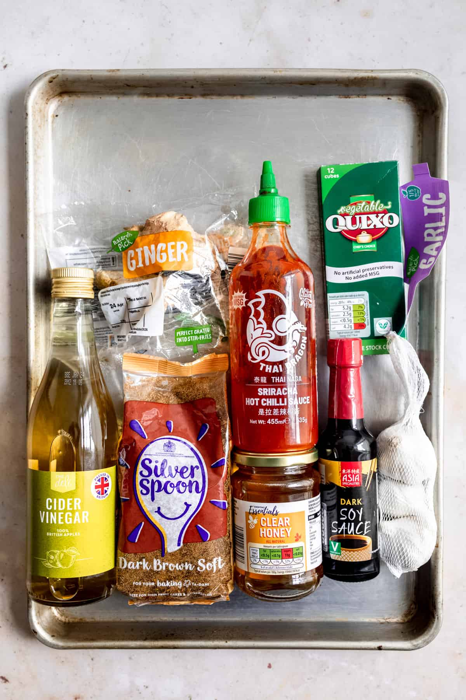

Honey Garlic Chicken Thighs

These Asian style chicken thighs are the perfect easy dinner.
There are more Chinese style chicken recipes like the chili chicken, sweet and sour chicken and the Chinese lemon chicken.
What you end up with is a tender savoury chicken thigh with golden crispy skin drizzled with a sticky gingery honey garlic soy sauce!
Ingredients

- fresh ginger
- fresh garlic
- clear runny honey- go for a cheap one here. Don't use any fancy stuff.
- dark soy sauce- you can use light soy sauce too, your sauce will just have a milder flavour
- cider vinegar- any kind of acid will work here. Lemon juice, white wine vinegar or just plain distilled vinegar.
- Sriracha- for some heat to balance the sweetness of the honey
- vegetable stock from a stock cube- you can use water or chicken stock for this part. I just wanted a little bit more flavour than water but not as much saltiness from using chicken stock.
- chicken thighs- bone in, skin on. These are the cheapest, so this recipe makes the most of them, rather than boning and skinning them.
Steps
- Start with a little bit of vegetable oil- about 1 tablespoon maybe a little bit more over medium heat in a medium sauce pan.
- Once the oil is hot, it will shimmer, gently fry the garlic and ginger until they are just starting to turn golden and fragrant.
- This should only take about 3-5 minutes.
- Add the remaining ingredients to the pan and bring to a simmer. Continue to simmer for about 10 minutes until the sauce has thickened but is still pourable.
- Sear the chicken in a non stick or cast iron skillet to get the skin golden and crispy. We're not looking to cook the chicken at all, so this process shouldn't take more than 10 minutes.
- Heat a tablespoon of vegetable oil in your skillet and once it's hot, add the chicken thighs skin side down and sear for about 7-10 minutes until the skin is golden.
- Place the chicken thighs in the bowl of your slow cooker and pour the honey garlic sauce over them. Cook on high for 4 hours or on low for 6 hours.
- Once the chicken is cooked place the thighs on a foil lined baking tray and place them under the grill/ broiler for about 5 minutes to crisp up the skin.
*The honey will burn easily so be sure to watch closely that they don't burn
.